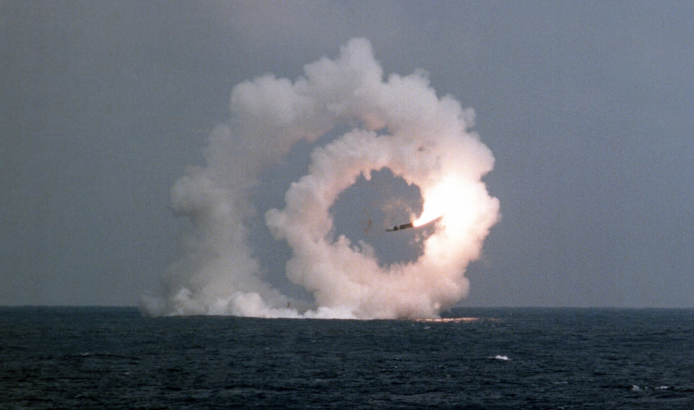
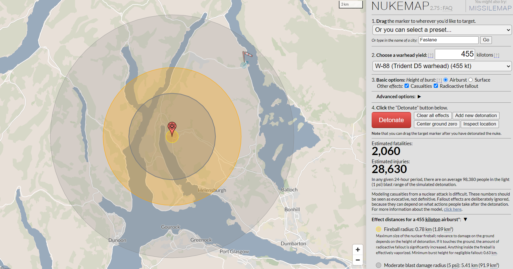

The sun glistened on the east coast of the US on the 30th of March, and from the depths of the water, the UK‘s Vanguard submarine hit the water's surface with a splash, as the two Boeing plane sized submarines surfaced. On board, 133 sailors, including Defence Secretary Grant Shapps and the head of the Navy, Admiral Sir Ben Key, wait in quiet anticipation. The missile triggers are pulled (These are shaped like pistol triggers, specifically the colt peacemaker), fire bellows from the launch control as the test missile roars its assent. Quickly however, to the disbelief of Mr Shapps. The booster rockets failed as they left the submarine, and the missile slammed into the Pacific, far from the intended location 3700 miles away in the Atlantic as a £17 million missile would be lost in the ocean.

A trident missile spinning hopelessly out of control, The US nation Archives In a statement to parliament, Mr Shapps stated the missile had “proven fully capable” in their operations and the test had "reaffirmed the effectiveness of the UK's nuclear deterrent". Fully capable is the missile that reaches its destination- this missile is anything but capable, yet more money goes towards it; the trident system is set to cost the taxpayer £250 billion. Recently, the decision was made to replace our nuclear fleet, upgrading our currently used vanguard submarines, of which there are 4, with the full capacity of carrying 160 nuclear warheads. This would replace them with the new, dread knot boats. However, currently only one of these ships are in service, with one being repaired, something which tends to happen to these vessels frequently, and another two are currently at port because they do not work. It would be easier to have faith in the trident missile system if its last tests were a resounding success. In 2019 however, the missiles would be fired from the UK, set to land in the Atlantic, yet another malfunction caused them to spin and they ended up travelling into the Pacific Ocean, self-destructing over the US.
In the cold but beautiful glens of Faslane, at the scenic Gare Loch, there is a dockyard. This dockyard is the home to Trident, a home in which the forests are divided by fences and razor wire. This nuclear submarine base lies only 30 miles from Glasgow. The Ministry of Defence admits that there have been 505 accidents involving their submarines between 2006 and 2017. This is shameful. So close to a major city, every week there has been some sort of error at the hands of these engineers. Luckily, none of these incidents have caused major issues, however it is daunting to know that our lives are held on a string, all it takes is one mistake, one critical error for one of these missiles going wrong is all it takes. With weapons of such immense destructive power, with our lives tittering at the razors edge of a nuclear accident as we slowly and semi consciously walk ourselves into an inevitable catastrophe.

Nuke maps prediction for the direct impact of the missiles currently in service, detonating in Faslane However, the bases are not the only things we must worry about. The substandard state of the ships is a huge risk to not only the safety of Scotland, but to the wider world. In 2015, one vanguard ship would be taken in for its 3-year maintenance, with a cost of £300 million. However, its findings would push the cost up to £500 million, and the repairs would take 7 years to fix due to a series of mistakes and malfunctions. It found the nuclear reactor had been repaired with superglue (no, I am not kidding. Superglue). This ship would be the one that failed the disastrous test missile on both occasions, in 2016 and 2024. Furthermore, companies such as BAE and Rolls Royce use these contracts to make hundreds of millions in so-called, “management costs”. Unnoticeable in the fact that the trident missile system is £1.3 billion over budget.
Trident is set to become obsolete; the Vanguard submarines are not enough to keep up with the designs of others, and the proposed solution is the dreadnought submarines. These submarines are both a behemoth of cost and scale. These submarines will cost £31 billion, they can be best described as a hotel in the water, however unlike most hotels, this one contains a quad launcher capable of firing world ending weapons. Take that premier inn. Although these projects employ many, such as the maintenance and security teams of Babcock, who oversee the Faslane facility, in both security and maintenance, although clearly this is not done well, as protesters commonly find ways into this facility.
These failures put us in a precarious position. On the 1st of March 2024, Russia would launch a test of its nuclear missile, and this test of the YARS ICBM (Intercontinental ballistic missile) would prove dangerously successful, putting Russia far ahead of us. It's time to look for another solution. This modern arms race is the highest stakes yet, with the click of a button being enough to start a fission reaction which could end humanity, mutually assured destruction is something that is mad, but it is all too real. The dust from nuclear missiles can cause a nuclear winter, in which radioactive fallout flakes can rain from the sky, causing everything to become dangerous. As world leaders throw around the most dangerous word they could, the nuclear word. In the 70s, a time of great global conflict, in which the cold war would cost the lives of millions through proxy wars, nuclear tensions were high, but the realisation that in nuclear war, there is no winners would lead to many arms limiting treaties, the SALT (Strategic arms limitation talks) accords would result in both major sides reducing their number of weapons, and only recently have the number of nuclear weapons started increasing, as the cold war slowly seeps out of public consciousness, we see old issues arise again.